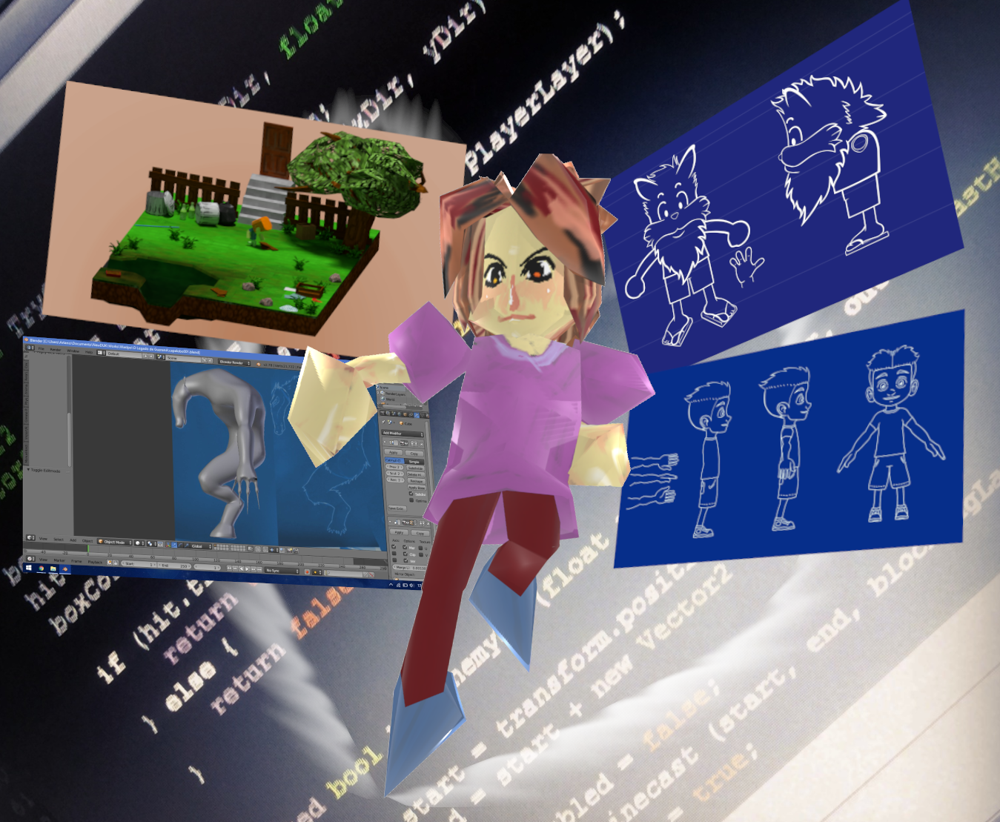

J. A. Machado
GAME DEVELOPER

Sobre mim
Todos me chamam de Artanis, sou um desenvolvedor apaixonado por jogos e mais ainda meus próprios projetos. Cresci com ActionScript2.0 estudei Delphi e .NET na escola, muito mais ainda em casa e pretendo nunca terminar minha formação acadêmica.
COMPETÊNCIAS
Últimos Projetos
Alguns dos últimos jogos em que trabalhei.
ChessD-19
ChessD-19 é um jogo de puzzles onde você controla um peão de xadrez e deve ajudar a salvar seu mundo.
O jogo foi desenvolvido para uma GameJam em 10 dias com o tema "fique em casa". o tema foi explorado na ideia de que estando em uma casa do tabuleiro sua peça se mantem segura.
O jogo possui 15 fases, enredo, cutscenes, diálogos, customização, upgrades e especiais.
Você pode jogar através do seu navegador aqui.
ChessD-19 foi desenvolvido com as ferramentas Blender, Gimp e Unity3D na linguagem C# e publicado para Windows e HTML5.


Ninjas vs Zombies
Ninjas vs Zombies é um jogo de estratégia por turnos em um tabuleiro pequeno, o que exige calcular muito bem cada movimento, para que não seja o último. Você controla um dos poucos ninjas sobreviventes a um apocalipse zumbi e deve coletar frutas para ajudar seus companheiros.
A mecânica do jogo é simples, basta arrastar o dedo para a direção que deseja andar e cada movimento é alternado entre andar atacando e andar preparando o próximo ataque.
O jogo foi desenvolvido com as ferramentas Gimp, Krita, Spriter e Unity3D na linguagem C#. Implementado API da Appodeal e publicado para celulares Android na Google Play.


QuizGuaruja3D
QuizGuarujá3D é um jogo eletrônico educativo com mecânica manual. Nele os estudantes estimulam a ordem e a educação enquanto aprendem mais sobre a cidade de Guarujá.
Diferente de outros jogos de tabuleiros eletrônicos, em QuizGuarujá3D, o jogo não te avisa quando andar, rolar o dado ou puxar uma carta, todas as ações podem ser feitas a qualquer momento. Passando naturalidade e disciplina para os jogadores.
Este jogo foi desenvolvido para uma professora acadêmica da rede de ensino pedagógico no intuito de passar para outros professores uma atividade em turma seguindo orientações da prefeitura da cidade.
O projeto foi desenvolvido com as ferramentas Gimp e Unity3D utilizando a linguagem C# e compilado para Windows.


{kind=link}
{kind=link}
{kind=link}
{kind=link}
{kind=link}
Entre em contato
Veja um pouco mais do que eu ando fazendo.
©ArtanisMachado. All rights reserved. Design: HTML5 UP.